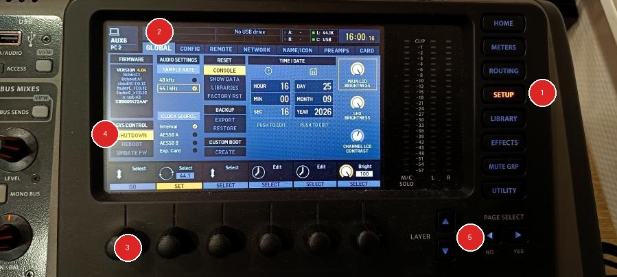

1
Sécurisation & Écran
SÉCURISER — Sécuriser la console avant de l’éteindre
- Activer le « MUTE » sur toutes les sorties « BUS », puis faire de même avec tous les instruments (sauf pour la ligne « AUX PC »).
- Sur l’écran, sélectionner le menu ① (touche SETUP), puis à l’aide des flèches directionnelles ⑤ sélectionner le menu ② (onglet GLOBAL). Ensuite, à l’aide du bouton ③, sélectionnez l’option ④ (SHUTDOWN) puis validez en cliquant sur le bouton ③.
